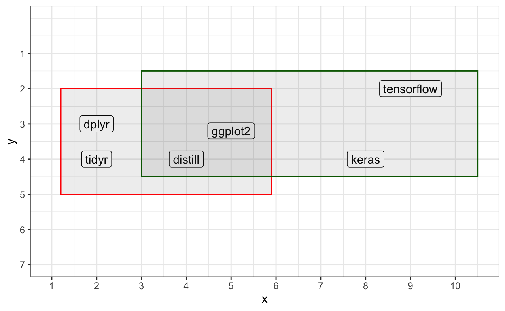
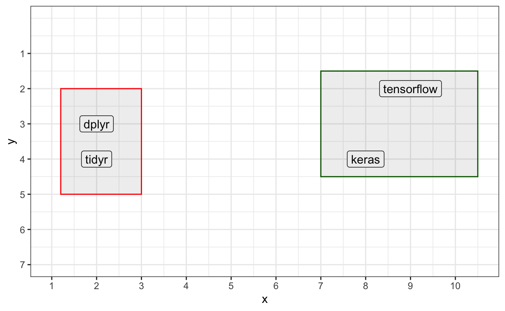
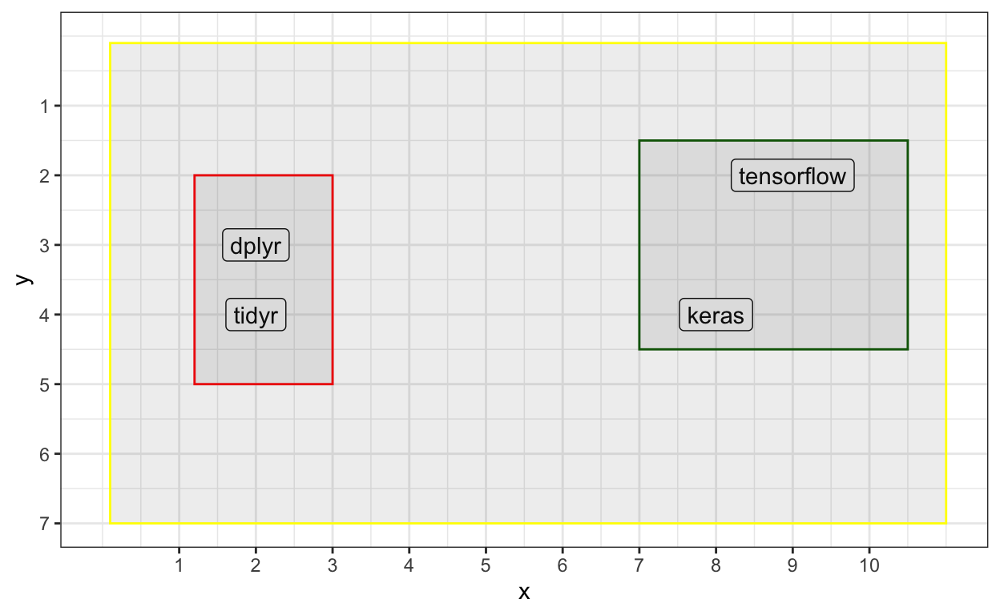
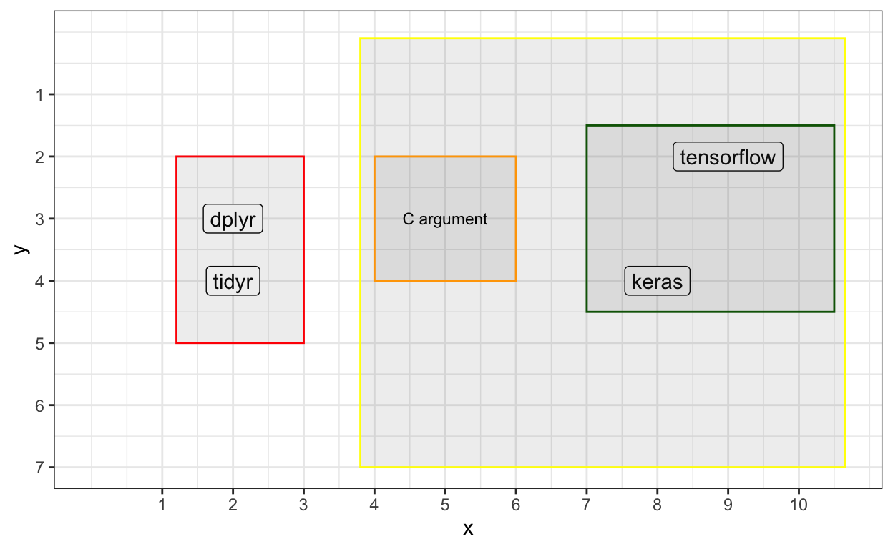

Table of Contents
The tfaddons package provides R wrappers to TensorFlow Addons.
The new features by SIG-addons for TensorFlow 2.x make working with Keras even more exciting. Because ready to use additional functionalities help users to apply different techniques without any effort (e.g. writing custom losses, metrics, classes). But which operations exactly do SIG-addons provide us?
- activations
- callbacks
- image
- layers
- losses
- metrics
- optimizers
- rnn
- seq2seq
- text
To make things easier we made the new types of ops very similar to keras library. E.g. to access activations one can print activation and see the available list of functions.
Before we start, please make sure that the TensorFlow version in your system is 2.x.
tensorflow::install_tensorflow() Later, one needs to install tfaddons. Note that currently the package is under development and has to be installed from Github:
devtools::install_github('henry090/tfaddons')Activations
We can take a look at classic Keras activations and later, see the new ones from tfaddons.
Generate random data
set.seed(42)
x_data <- matrix(data = runif(100,-2.4,2.4), nrow = 100,ncol = 5)
y_data <- seq(-5,4.9,0.1) %>% as.matrix()
old_keras = c('activation_elu','activation_exponential','activation_hard_sigmoid',
'activation_linear','activation_relu','activation_selu',
'activation_sigmoid','activation_softmax','activation_softplus',
'activation_softsign','activation_tanh')
k_clear_session()Activation Extraction
A small function will quickly provide us with results. So, first we train a model and then extract activations of 1st layer from each model.
library(plotly)
library(keras)
get_activations <- function(activations) {
keras_list = list()
for (i in 1:length(activations)) {
activation_fun = eval(parse(text = activations[i]))
model = keras_model_sequential() %>%
layer_dense(1, input_shape = ncol(x_data),
activation = activation_fun) %>%
layer_dense(1, activation = 'linear') %>%
compile(optimizer = 'adagrad', loss = 'mae',
metrics = 'mse')
model %>% fit(x_data, y_data, verbose = 0,
batch_size = 1, epochs = 2)
inputs = model$input
outputs = lapply(1:length(model$layers), function(x) model$layers[[x]]$output)
functions = lapply(1:length(outputs), function(x)
k_function(list(inputs), list(outputs[[x]]) ))
act_layers = list()
for (j in 1:nrow(x_data)) {
res = k_reshape(x_data[j,],c(1, 5))
layer_outs = functions[[1]](res)[[1]]
act_layers[[j]] <- layer_outs
}
activation = do.call(rbind, act_layers) %>% as.vector() %>% sort()
x = seq(-5, 4.9, 0.1)
df = data.frame(x = x, activation = activation)
a <- list(
text = paste(activations[i]),
xref = "paper",
yref = "paper",
yanchor = "bottom",
xanchor = "center",
align = "center",
x = 0.5,
y = 1,
showarrow = FALSE
)
p = plot_ly(df, x = ~x, y = ~activation,
mode = 'lines', type = 'scatter',color = I('#CE0002'),
hovertext = paste(activations[i])) %>%
layout(annotations = a)
keras_list[[i]] <- p
}
keras_list
}Classic Keras
old_k = get_activations(old_keras)
subplot(lapply(1:length(old_keras), function(x) old_k[[x]]),nrows = 3,
shareX = TRUE, margin = 0.03) %>% layout(showlegend = FALSE)TensorFlow Addons Activations
Now, the same for the new activation functions from TensorFlow Addons.
new_keras = c('activation_gelu','activation_hardshrink','activation_lisht',
'activation_mish', 'activation_softshrink',
'activation_sparsemax','activation_tanhshrink')
new_k = get_activations(new_keras)
subplot(lapply(1:length(new_k), function(x) new_k[[x]]),nrows = 3,
shareX = TRUE, margin = 0.03) %>% layout(showlegend = FALSE)Gaussian Error Linear Units (GELUs)
As we already familiar with MNIST, it will be easier to apply the new features from tfaddons to this dataset. Using Sequential API one can consequently add new type of layers and activation functions. For example, below we will choose GELU(Hendrycks and Gimpel 2016) as an activation function for the 1st layer. But first, we need to understand the GELU.
Gaussian Error Linear Unit (GELU) is defined as:
\[\text{GELU}(x)=xP(X\leq x)=x\Phi(x)\] Where \(\Phi\) is the cumulative distribution function of a Gaussian.
GELUs can be approximated as:
\[0.5x(1 + tanh[\sqrt{2/\pi}(x + 0.044715x^3)])\]
Unlike the ReLU, the GELU and ELU outputs can be both negative and positive. In addition, GELU has the following differences:
- it is not linear in the positive domain and exhibits curvature at all points
- GELU weights its input depending upon how much greater it is than other inputs
Layers
Layer group normalization
With traditional Keras, we have just had layer_batch_normalziation which is very effective if our batch_size is not small. However, as layer_group_normalization(Wu and He 2018) is batch independent, the small batch_size will not lead to bad performance as in batch normalization case. Therefore, group normalization is more stable and powerful than batch normalization because the first one divides channels into groups and only then normalizes features inside groups. In contrast, batch normalization directly performs normalization by using mean and variance.
Figure 1: Normalization methods. Each subplot shows a feature map tensor, with N as the batch axis, C as the channel axis, and (H, W) as the spatial axes. The pixels in blue are normalized by the same mean and variance, computed by aggregating the values of these pixels.
Layer Multi-Head Attention
Multi-Head attention operation takes roots from “Attention Is All You Need”(Vaswani et al. 2017) paper and defines a multiplication of 3 matrices (dot product), such as:
- query
- key
- value
The model proposed by this paper is called the Transformer which consists of Encoders and Decoders.
Before going into a brief explanation of Transformers, it is better to visualize the model architecture.
library(DiagrammeR)
grViz("
digraph Transformer {
graph [overlap = false, fontsize = 10]
node [shape = box,
fontname = Helvetica,
width = 3,color=darkgreen]
edge [arrowhead=none]
Encoder_1, Encoder_2, Encoder_3, Encoder_4, Encoder_5, Encoder_6
node [shape = box,
fixedsize = true,
width = 3,color=red] // sets as circles
edge [arrowhead=none, arrowtail = none]
Decoder_6, Decoder_5, Decoder_4, Decoder_3, Decoder_2, Decoder_1
subgraph cluster1 {
graph [color=red, penwidth=3]
Decoder_2->Decoder_1 Decoder_3->Decoder_2
Decoder_4->Decoder_3 Decoder_5->Decoder_4
Decoder_6->Decoder_5
}
node [shape=egg, fontsize=18,width=4.5]
subgraph cluster0 {
graph [color=darkgreen, penwidth=3]
Encoder_2->Encoder_1 Encoder_3->Encoder_2
Encoder_4->Encoder_3 Encoder_5->Encoder_4
Encoder_6->Encoder_5
}
node [color=blue,penwidth=2]
Multi_Head_Attention [style = filled, fillcolor = gold]
Feed_Forward_NN [style = filled, fillcolor = grey]
Add_Norm [style = filled, fillcolor = cornflowerblue,fontcolor=white]
Add__Norm [style = filled, fillcolor = cornflowerblue,fontcolor=white]
Encoder_1 ->{Add_Norm}
Add_Norm->Feed_Forward_NN
Feed_Forward_NN->Add__Norm
Add__Norm->{Multi_Head_Attention}
node [shape=plaintext, width=6]
Multi_Head_Attention -> Positional_Embeddings
Positional_Embeddings -> Input_Embeddings
node [shape=plaintext, fontsize=30]
Input_Embeddings [style = filled, fillcolor = pink]
Input_Embeddings -> Inputs
node [color=blue,penwidth=2,shape=egg, fontsize=18,width=4.5]
Masked_Multi_Head_Attention [style = filled, fillcolor = gold]
Encoder_Decoder_Attention [style = filled, fillcolor = gold]
Feed_Forward__NN [style = filled, fillcolor = grey]
Add_Norm_ [style = filled, fillcolor = cornflowerblue,fontcolor=white]
Add_Norm__ [style = filled, fillcolor = cornflowerblue,fontcolor=white]
Add__Norm__ [style = filled, fillcolor = cornflowerblue,fontcolor=white]
Decoder_1 ->{Add_Norm_}
Add_Norm_ -> Feed_Forward__NN
Feed_Forward__NN ->Add__Norm__
Add__Norm__->Encoder_Decoder_Attention
Encoder_Decoder_Attention-> Add_Norm__
Add_Norm__ ->Masked_Multi_Head_Attention
node [shape=plaintext, width=6]
Masked_Multi_Head_Attention -> Positional__Embeddings
Positional__Embeddings -> Output_Embeddings
node [shape=plaintext, fontsize=30]
Output_Embeddings [style = filled, fillcolor = pink]
Output_Embeddings -> Output
node [color=gold,penwidth=3,shape=egg, fontsize=18,width=4.5]
Output_probabilites [style = filled, fillcolor = gold]
Softmax [style = filled, fillcolor = gold]
Linear [style = filled, fillcolor = gold]
Output_probabilites->Softmax
Softmax->Linear
Linear->Decoder_6
edge [arrowhead=vee]
node [shape =plaintext,fontsize = 45, fontcolor=blue]
Transformer->{Encoder, Decoder}
Encoder [shape =plaintext,fontsize = 45, fontcolor=darkgreen]
Encoder->{Encoder_6}
Decoder [shape =plaintext,fontsize = 45, fontcolor=red]
Decoder->{Decoder_6}
}
")Indeed, this seems a bit challenging to understand but we can divide the plot into different sections:
- Econder
- Decoder
- Feed Forward NN
- Layer Normalization
- Multi-Head Attention mechanism
- Positional Embeddings
- Linear & Softmax activation
Where to watch?
Our task is to start from bottom to top.
- The first thing we see are the inputs. They are our plain Input texts. E.g.: “Very easy”. Our input consists of 2 words.
- Imagine that each word has 512 embeddings(Mikolov et al. 2013). Then we have 2 words (rows) with 512 columns (dimensions). Hence, these are your Input Embeddings.
- The title Positional Embeddings gives us a clue about the meaning, it simply encodes the position of each word against the other ones.
- From the left of the plot, we see 3 unique layers: Multi-Head Attention mechanism, Layer Normalization, Feed Forward NN. What is the purpose of these layers? Before explanation, we can observe that in the middle, on the left side Encoder has so-called sub-encoders (Encoder_1, …, Encoder_6). In fact, each of these encoders contains these 4 layers from Multi-head layer up to Layer normalization. From the right of the plot, we have 6 layers. This means that each Decoder has 6 of these layers.
- Let’s begin from the Multi-head Attention layer:
\[\text{Attention}(Q,K,V)=\text{softmax}(\frac{QK^T}{\sqrt{d_k}})V \] As we already mentioned above there is 3 type of matrices in Attention layer: Query, Key, and Value matrices where Q and K matrices are multiplied, then divided by the square root of Key matrix dimensions (in the paper the number of Key dimensions are 64, so sqrt of 64 is 8). Then the softmax activation is applied in order to normalize the outputs. Later, we have to multiply the normalized value by the Value matrix. Note that, these matrices are created by the model during the training process.
Till now, we just covered the attention mechanism but what are the Heads? Attention contains 3 Matrices, Heads consist of multiple Attentions. So, basically the purpose of Heads is to concentrate attention over the multiple Attention mechanisms and then concatenate all of \(Q\), \(K\), \(V\) matrices, and multiply with jointly created matrix \(W^O\).
The information from Attentions moves to the next Layer - Feed Forward NN. But keep in mind that we never lose the dimensionality of our input vectors, 512. So, all the time inputs go into a certain layer, is updated, and without losing dimension size is transferred to the next layer. Between Attention and Feed Forward NN, there are Normalization Layers.
After transferring the output to the final Enocder_6, the internal representation of vectors is moved to the stack of decoders. What is on the right side of the diagram?
We have Masked and Encoder-Decoder Attentions. As we go from bottom to top the first thing we need to do is to analyze Masked Multi-Head Attention Layer. In the decoder, masked Attention prevents positions from attending to subsequent positions. This means that future positions are masked and set to \(−∞\). For example:
| English | German |
|---|---|
| I love R programming language | Ich liebe R Programmiersprache |
In order to predict first 3 words “I love R” first we encode them like dimensions: “1 2 3” and then German as “4 5 6”. What are we doing here?
We use all 3 inputs from English and parallelly translate sentence, but which parallel computations do we mean? For example:
1 2 3 => Predict 4th word
1 2 3 + 4 => Predict 5th word
1 2 3 + 4 + 5 => Predict 6th word
Encoder-Decoder Attention is like a standard Attention Layer however it takes Q matrix from below layer; K, and V matrices are taken from stack of Encoders.
As a final step, the output from the stack of Decoders are normalized by Softmax and then, by Linear function (logits to probabilities)
Example of Multi-Head attention layer with tfaddons:
mha = layer_multi_head_attention(head_size = 128, num_heads = 128)
query = tf$random$uniform(list(32L, 20L, 200L)) # (batch_size, query_elements, query_depth)
key = tf$random$uniform(list(32L, 15L, 300L)) # (batch_size, key_elements, key_depth)
value = tf$random$uniform(list(32L, 15L, 400L)) # (batch_size, key_elements, value_depth)
attention = mha(list(query, key, value)) # (batch_size, query_elements, value_depth)Keras model architecture
As mentioned, using Sequential API the Keras model with:
- activation GELU
- layer_group_normalization
can be defined as:
# Build a sequential model
model = keras_model_sequential() %>%
layer_conv_2d(filters = 10, kernel_size = c(3,3),input_shape = c(28,28,1),
# put channels to the 3rd axis [rows,columns,channels]
data_format = "channels_last",
#apply activation gelu
activation = activation_gelu) %>%
# apply group normalization layer
# after convolution split 10 channels into 5 subgroups
layer_group_normalization(groups = 5, axis = 3) %>%
layer_flatten() %>%
layer_dense(10, activation = 'softmax')Losses
There are a lot of loss functions in tfaddons as well, for example:
IoU(Zhou et al. 2019) and GIoU(Rezatofighi et al. 2019) are widely used for object detection, segmentation, and tracking because they show better performance during the assessment of 2D bounding boxes.
Itersection over Union can be defined as:
\[IoU=\dfrac{\mid{A\cap B\mid}}{\mid{A\cup B\mid}}=\dfrac{\mid I \mid}{\mid U \mid}\]
and Generalized Intersection over Union as:
\[GIoU = \dfrac{|A\cap B|}{|A\cup B|} - \dfrac{|C\backslash(A\cup B)|}{|C|} = IoU - \dfrac{|C\backslash(A\cup B)|}{|C|}\]
where “A” and “B” are actuals and predicted values, division of intersection to union. However, if the intersection is 0, then the IoU score is 0 as well. Therefore, we are not able to assess the loss because it is zero. In contrast, GIoU has an additional argument “C” which tries to enclose “A” and “B”. What does it mean?
Imagine that A and B are operating systems where R has built-in packages from CRAN.
“A” has {“ggplot2”, “dplyr”, “tidyr”, “distill”}
“B” has {“distill”, “keras”, “tensorflow”, “ggplot2”}
From the point of math:
- What they have in common:\(A\cap B = \{ distill,\:ggplot2 \}\)
- What they have in union: \(A\cup B = \{ ggplot2,\:dplyr,\:tidyr, \:distill,\: keras,\:tensorflow \}\)
library(ggplot2)
df = data.frame(pkgs = c("ggplot2","dplyr","tidyr","distill","keras","tensorflow"),
x = c(5, 2,2, 4,8,9),
y = c(3.2, 3,4, 4,4,2))
ggplot(df, aes(x, y, label = pkgs)) + geom_label() +
scale_y_reverse(breaks = seq(1,10,1)) + theme_bw() +
scale_x_continuous(breaks = seq(1,10,1)) +
expand_limits(x = c(1, 10), y = c(0, 7)) +
# prediction
annotate("rect", xmin = 1.2, xmax = 5.9, ymin = 2, ymax = 5,
alpha = .1, color = 'red') +
# actual
annotate("rect", xmin = 3, xmax = 10.5, ymin = 1.5, ymax = 4.5,
alpha = .1, color = 'darkgreen')
As we have bounding boxes we can calculate IoU and GIoU scores:
iou = loss_giou(mode = 'iou') # or giou
# [y_min, x_min, y_max, x_max]
boxes_actual = tf$constant(list(c(1.5,3,4.5,10.5)))
boxes_predicted = tf$constant(list(c(2,1.2,5,5.9)))
iou_loss = iou(boxes_actual,boxes_predicted)
cat('IoU Loss: ', as.array(iou_loss))
IoU Loss: 0.7529812
giou = loss_giou(mode = 'giou') # or iou
# [y_min, x_min, y_max, x_max]
giou_loss = giou(boxes_actual,boxes_predicted)
cat('GIoU Loss: ', as.array(giou_loss))
GIoU Loss: 0.8512915What if they do not have intersection?
df = data.frame(pkgs = c("dplyr","tidyr","keras","tensorflow"),
x = c(2,2,8,9),
y = c(3,4,4,2))
ggplot(df, aes(x, y, label = pkgs)) + geom_label() +
scale_y_reverse(breaks = seq(1,10,1)) + theme_bw() +
scale_x_continuous(breaks = seq(1,10,1)) +
expand_limits(x = c(1, 10), y = c(0, 7)) +
annotate("rect", xmin = 1.2, xmax = 3, ymin = 2, ymax = 5,
alpha = .1, color = 'red') +
annotate("rect", xmin = 7, xmax = 10.5, ymin = 1.5, ymax = 4.5,
alpha = .1, color = 'darkgreen')
IoU
According to paper, IoU makes a bad prediction. Because loss is 0.
df = data.frame(pkgs = c("dplyr","tidyr","keras","tensorflow"),
x = c(2,2,8,9),
y = c(3,4,4,2))
ggplot(df, aes(x, y, label = pkgs)) + geom_label() +
scale_y_reverse(breaks = seq(1,10,1)) + theme_bw() +
scale_x_continuous(breaks = seq(1,10,1)) +
expand_limits(x = c(0, 10), y = c(0, 7)) +
annotate("rect", xmin = 1.2, xmax = 3, ymin = 2, ymax = 5,
alpha = .1, color = 'red') +
annotate("rect", xmin = 7, xmax = 10.5, ymin = 1.5, ymax = 4.5,
alpha = .1, color = 'darkgreen') +
annotate("rect", xmin = 0.1, xmax = 11, ymin = 0.1, ymax = 7,
alpha = .1, color = 'yellow')
GIoU
However, with GIoU the situation is different. From left and right GIoU does not take the whole bound, as a result the loss will not be 0. Hence, the function performs a better object prediction.
df = data.frame(pkgs = c("dplyr","tidyr","keras","tensorflow"),
x = c(2,2,8,9),
y = c(3,4,4,2))
ggplot(df, aes(x, y, label = pkgs)) + geom_label() +
scale_y_reverse(breaks = seq(1,10,1)) + theme_bw() +
scale_x_continuous(breaks = seq(1,10,1)) +
expand_limits(x = c(0, 10), y = c(0, 7)) +
annotate("rect", xmin = 1.2, xmax = 3, ymin = 2, ymax = 5,
alpha = .1, color = 'red') +
annotate("rect", xmin = 7, xmax = 10.5, ymin = 1.5, ymax = 4.5,
alpha = .1, color = 'darkgreen') +
annotate("rect", xmin = 3.8, xmax = 10.65, ymin = 0.1, ymax = 7,
alpha = .1, color = 'yellow') +
annotate("rect", xmin = 4, xmax = 6, ymin = 2, ymax = 4,
alpha = .1, color = 'orange') +
annotate("text", x = 5, y = 3, label = c('C argument'),
size=3,
color = 'black')
Object detection has already been introduced in this blog. With tfaddons we now can apply this loss function to our object detection model.
Optimizers
Optimizer Rectified_Adam(Liu et al. 2019) was already mentioned on the RStudio AI blog. However, it was inside “keras-bert” library. With tfaddons it is not only possible to apply rectified Adam but also using attention(Zhang et al. 2019) mechanism to gain more control over weights, and as a result to get a remarkable success during model training.
Empirical and theoretical evidence shows that without warmup training at early steps get a large amount of variance which therefore leads to bad performance. Nonetheless, a small learning rate for the first epochs and gradual increase of this parameter may accelerate convergence. But, it is not guaranteed that warmup is always effective and can work in different ML applications.
If Adam and SGD use the experience of past accumulated gradients for a better understanding of the next direction, then the Lookahead mechanism runs another optimizer within itself to generate so-called “fast weights”. These weights help for an effective update of “slow weights”.
 through a ResNet-32 test accuracy surface at epoch 100 on CIFAR-100. We project the weights onto a plane defined by the first, middle, and last fast (inner-loop) weights. The fast weights are along the blue dashed path. All points that lie on the plane are represented as solid, including the entire Lookahead slow weights path (in purple). Lookahead (middle, bottom right) quickly progresses closer to the minima than SGD (middle, top right) is able to. (Right) Pseudocode for Lookahead.](images/lookahead.png)
Figure 2: (Left) Visualizing Lookahead through a ResNet-32 test accuracy surface at epoch 100 on CIFAR-100. We project the weights onto a plane defined by the first, middle, and last fast (inner-loop) weights. The fast weights are along the blue dashed path. All points that lie on the plane are represented as solid, including the entire Lookahead slow weights path (in purple). Lookahead (middle, bottom right) quickly progresses closer to the minima than SGD (middle, top right) is able to. (Right) Pseudocode for Lookahead.
According to paper, Lookahead leads to improved convergence over the inner optimizer and often improved generalization performance while being robust to hyperparameter changes.
So, we also have a kerastuneR package which is created by Keras Team for tuning the hyperparameters of Keras model. Let’s apply this in practice and see what will happen if we apply optimizer Rectified Adam with Lookahead Mechanism and play with hyperparameters.
- Import and prerocess Iris
library(magrittr)
data("iris")
iris$Species = as.integer(factor(iris$Species))
iris[1:4] = scale(iris[1:4])- Define a model-building function which will be used for generating a model with random defined parameters, such as the number of neurons, learning rates. The function takes an argument hp from which one can sample hyperparameters, such as
hp$Int('units', min_value = 32, max_value = 512, step = 32)(an integer from a certain range).
library(keras)
library(tensorflow)
library(kerastuneR)
library(tfaddons)
build_model = function(hp) {
model = keras_model_sequential()
model %>% layer_dense(units = hp$Int('units',
min_value = 2,
max_value = 100,
step = 32/8),input_shape = ncol(iris) - 1,
activation = activation_gelu) %>%
layer_dense(units = 3, activation = 'softmax') %>%
compile(
optimizer = tfaddons::lookahead_mechanism(
tfaddons::optimizer_radam(
learning_rate = hp$Choice('learning_rate',
values = c(1e-2, 1e-3, 1e-4, 1e-5))
)
),
loss = 'categorical_crossentropy',
metrics = 'accuracy')
return(model)
}
tuner = RandomSearch(
build_model,
objective = 'val_accuracy',
max_trials = 10,
executions_per_trial = 8,
directory = 'radam',
project_name = 'lookahead_mechanism')Then, start the search for the best hyperparameter configuration. The call to search has the same signature as model %>% fit(). But here instead of fit() we call fit_tuner().
tuner %>% fit_tuner(iris[1:4],to_categorical(iris[5])[,1:3],
epochs = 2,
validation_split = 0.2)Visualize the models for better understanding:
tuner %>% plot_tuner(type = 'echarts4r')One can observe that the highest accuracy was got by the highest learning rate. The smaller the learning rate the worse the performance. This is because our network is simple and we do not need warmup steps. But, readers can set higher learning rates and even add another dense layer to see how the lookahead mechanism behaves in this case.
Metrics
The metrics from tfaddons really come to rescue. Because if one has ever participated in Kaggle competitions, then it is clear that cohen kappa, f1, Matthews Correlation Coefficient are the most well-known and used metrics in this community. So, with TensorFlow Addons, there is no need for custom functions to assess the result of the Keras model.
How to apply?
Example of TF Addons with Keras
library(keras)
library(tfaddons)
mnist = dataset_mnist()
x_train <- mnist$train$x
y_train <- mnist$train$y
# reshape the dataset
x_train <- array_reshape(x_train, c(nrow(x_train), 28, 28, 1))
# Transform RGB values into [0,1] range
x_train <- x_train / 255
# One-hot encoding
y_train <- to_categorical(y_train, 10)
# Build a sequential model
model = keras_model_sequential() %>%
layer_conv_2d(filters = 10, kernel_size = c(3,3),input_shape = c(28,28,1),
#apply activation gelu
activation = activation_gelu) %>%
# apply group normalization layer
layer_group_normalization(groups = 5, axis = 3) %>%
layer_flatten() %>%
layer_dense(10, activation='softmax')
# Compile
model %>% compile(
# apply rectified adam
optimizer = optimizer_radam(),
# apply sparse max loss
loss = loss_sparsemax(),
# choose cohen kappa metric
metrics = metric_cohen_kappa(10)
)
model %>% fit(
x_train, y_train,
batch_size = 128,
epochs = 1,
validation_split = 0.2
)And here is the result:
Train on 48000 samples, validate on 12000 samples
48000/48000 [==============================] - 24s 510us/sample - loss: 0.1193 -
cohen_kappa: 0.8074 - val_loss: 0.0583 - val_cohen_kappa: 0.9104Callbacks
We almost have forgotten to mention the new callbacks! Now it is possible to stop training after a certain time and even get a progress bar while training a model. Just pass callbacks as usual into fit function:
model %>% fit(
x_train, y_train,
batch_size = 128,
epochs = 4,
validation_split = 0.2,
verbose = 0,
callbacks = callback_time_stopping(seconds = 6, verbose = 1)
)
Timed stopping at epoch 1 after training for 0:00:06End notes
In fact, we have just covered a lot of interesting features from TensorFlow Addons. However, there are a giant number of operations which is not possible to introduce in this post, such as:
- image ops
- text ops
- rnn ops
- attention mechanisms, e.g: attention Bahdanau, Luong, Monotonic, and many more.
Neural machine translation was already explained. One can apply new methods from tfaddons to the same case or even directly find a new example here.
We encourage readers to experiment with TensforFlow Addons and share their perspectives on RStudio AI Blog!
Thanks for reading!
Hendrycks, Dan, and Kevin Gimpel. 2016. “Gaussian Error Linear Units (Gelus).” https://arxiv.org/abs/1606.08415.
Liu, Liyuan, Haoming Jiang, Pengcheng He, Weizhu Chen, Xiaodong Liu, Jianfeng Gao, and Jiawei Han. 2019. “On the Variance of the Adaptive Learning Rate and Beyond.” https://arxiv.org/pdf/1908.03265v1.pdf.
Mikolov, Tomas, Kai Chen, Greg Corrado, and Jeffrey Dean. 2013. “Efficient Estimation of Word Representations in Vector Space.” https://arxiv.org/abs/1301.3781.
Rezatofighi, Hamid, Nathan Tsoi, JunYoung Gwak, Amir Sadeghian, Ian Reid, and Silvio Savarese. 2019. “Generalized Intersection over Union: A Metric and a Loss for Bounding Box Regression.” https://arxiv.org/pdf/1902.09630.pdf.
Vaswani, Ashish, Noam Shazeer, Niki Parmar, Jakob Uszkoreit, Llion Jones, Aidan N. Gomez, Lukasz Kaiser, and Illia Polosukhin. 2017. “Attention Is All You Need.” https://arxiv.org/pdf/1706.03762.pdf.
Wu, Yuxin, and Kaiming He. 2018. “Group Normalization.” https://arxiv.org/pdf/1803.08494.pdf.
Zhang, Michael R., James Lucas, Geoffrey Hinton, and Jimmy Ba. 2019. “Lookahead Optimizer: K Steps Forward, 1 Step Back.” https://arxiv.org/pdf/1907.08610v1.pdf.
Zhou, Dingfu, Jin Fang, Xibin Song, Chenye Guan, Junbo Yin, Yuchao Dai, and Ruigang Yang. 2019. “IoU Loss for 2D/3D Object Detection.” https://arxiv.org/abs/1908.03851.